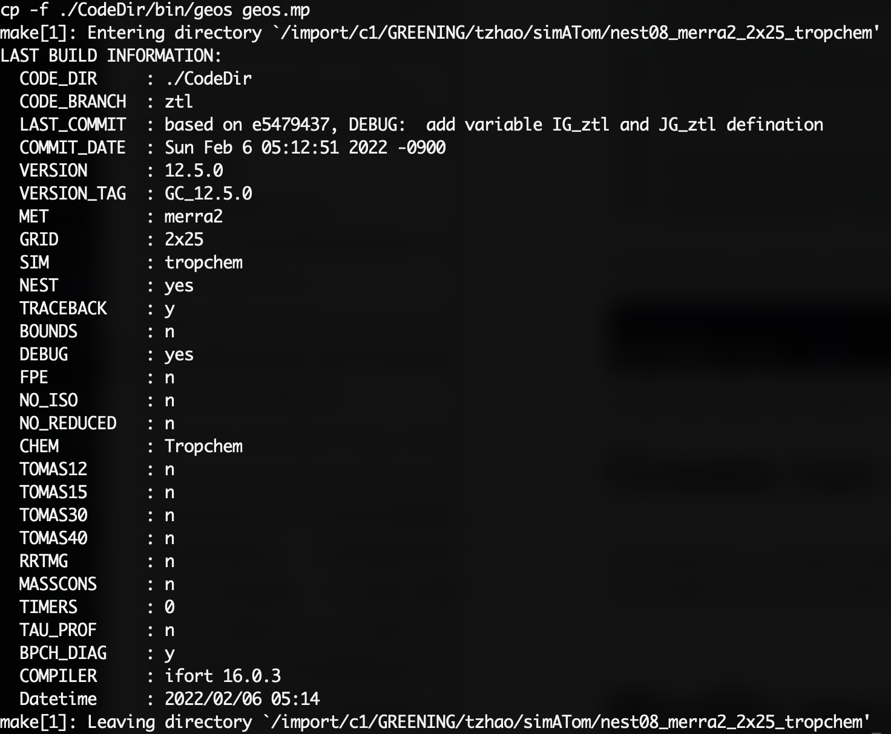

This article introduces how to run a nested grid simulation using GEOS-Chem v12.5.0, through 6 steps. Here let’s go.
GEOS-Chem v12.5.0 (DOI: 10.5281/zenodo.3403111) was released on 09 Sep 2019. You can use the following Git commands to download the GEOS-Chem 12.5.0 source code and GEOS-Chem Unit Tester package.
1 | # Download the GEOS-Chem source code |
Finishing the process above, you should be in UT like:
In the next step we create a run directory of our simulation.
Run directory is a folder that keeps configuration files like input.geos, HEMCO_Config.rc etc, the executable file of the model (geos), and also, the model output after simulation is done.
Go to the CodeDir, a softlink of the source code directory.
We firsr need to know which branch the source code currently is:
1 | git branch |
Say the branch is “mod_1”, and we want to switch to the basic branch, we first look at the version history
1 | git reflog |
we can see the head of branchs we used before, like this:
Find the head of the branch we need, then:
1 | git reset --hard HEAD^ |
Now we have go back to basic branch now and the code are original. If needed, we could create a new branch, say “mod_2”:
1 | git checkout -b mod_2 |
This step can be skipped. We can start to modify the code as we need. Finish modification, leave a commit to save it:
1 | git add . |
No worries about overwritting the HEAD^ we stoppe by. Now modification is done and saved to a new HEAD^. Next time we need to use this code version, we can just simply switch to this branch again.
The compilation is done by Makefile. We first clean the previous compilation files to make sure nothing goes wrong. Go to the run directory and do:
1 | make realclean |
Then compile. Make sure nest and debug are turned on.
1 | make -j4 NEST=yes DEBUG=yes mpbuild |
Wait until compilation is finished, if successfully compiled, should see the text like:

1 | sbatch xxx.sh |
Wait for the results!